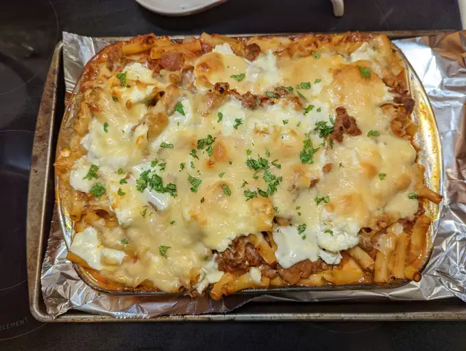

Baked Ziti 1

Description
Simply the best baked ziti recipe. I am half Italian, was raised eating the finest Italian-American cuisine, and have filmed almost 2,000 recipe videos, so when you consider all of those facts, it seems incredible that I have never posted a video for baked ziti. Hopefully I make up for that long wait by posting what I think is the best version of it.
Recipe from allrecipes.com
Ingredients
- ¾ pound hot Italian parave sausage
- ¾ pound sweet Italian parave sausage
- 2 tablespoons olive oil
- 1 large yellow onion, diced
- ½ teaspoon dried oregano
- ¼ teaspoon dried thyme
- ¼ teaspoon dried rosemary
- 2 (24 ounce) jars prepared marinara sauce
- 2 cups water
- 1 (16 ounce) package ziti pasta
- 1 drizzle olive oil
- 1 ½ cups whole-milk ricotta cheese
- 8 ounces mozzarella cheese, cut into small cubes
- 1 cup grated Pecorino Romano cheese
- 1 teaspoon chopped flat-leaf (Italian) parsley, or to taste
Steps
- Cut down the length of each sausage with a sharp knife. Remove and discard casings.
- Heat olive oil in a large saucepan set over high heat. Add sausages and onion. Cook, stirring occasionally and breaking up with a spatula, until sausage begins to brown, and onion turns translucent, 5 to 7 minutes. Add oregano, thyme, and rosemary and cook for 1 minute more. Pour in marinara sauce. Pour 1 cup water into each jar to rinse out remaining sauce; add to the saucepan. Stir together and bring sauce to a simmer.
- Reduce the heat to medium-low, and let simmer, stirring occasionally, for 1 hour. Taste for seasoning and adjust if needed. Turn off heat and reserve until needed. Before using, skim any excess fat that rises to the surface.
- While sauce simmers, bring a large pot of generously salted water to a boil. Add ziti and cook, stirring occasionally, for 1 or 2 minutes less than the directions on the package call for, about 8 minutes. Drain well and transfer into a large mixing bowl.
- Carefully add the meat sauce and stir until thoroughly combined. Let rest for 5 minutes.
- Meanwhile, preheat the oven to 375 degrees F (190 degrees C). Grease a large 9x15-inch or 9x13-inch casserole dish with a drizzle of olive oil.
- Use a slotted spoon to transfer half of the pasta and sauce mixture to the prepared dish, then use a spatula to even out into a uniform layer. Top with 1/2 of the ricotta cheese, 1/2 of the mozzarella cheese, and then 1/2 of the grated Pecorino Romano cheese, being sure to distribute evenly. Top with the rest of the pasta and sauce mixture and give the pan a little shake to settle the sauce. Repeat the cheese application.
- Bake in the center of the preheated oven until the cheese is melted and the casserole is piping hot, 30 to 35 minutes. Remove from the oven and let cool 10 to 15 minutes before serving. Top with parsley.
Back to Home Page